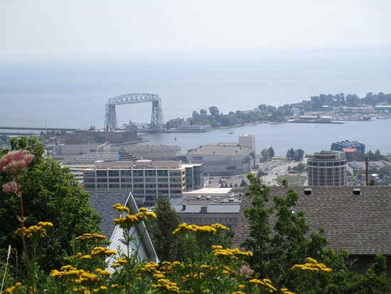
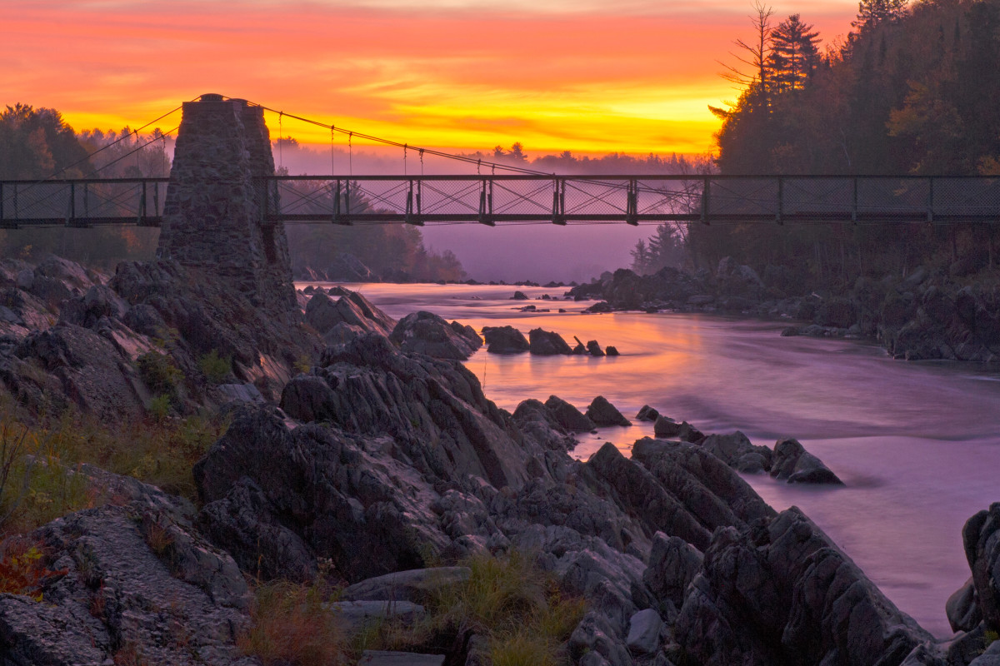
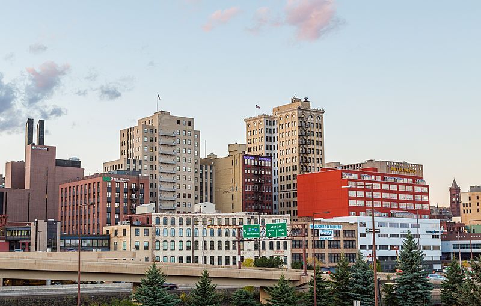
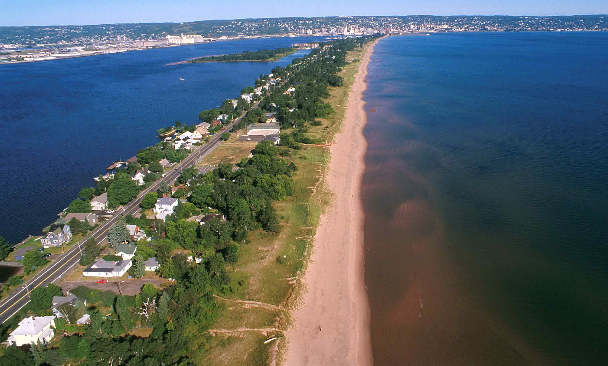

Learn why the University of Minnesota Duluth and the city of Duluth are special
Watch our 30+ second promotional video showcasing what makes UMD special!
Video Credits: Created by [Team Member 1], [Team Member 2], [Team Member 3], [Team Member 4], [Team Member 5]
Growing up in the duluth area I've always been aroudn the UMD campus, wether for sporting events, school feild trips, or just with friends. Ive always loved the campus and its location, especially the proximity to the lake and downtown.
UMD's strong academic programs, particularly in my field of interest, have attracted me. The quality of education and the opportunities for hands-on learning are exceptional in LSBE. UMD exceptionally high placement rates after graduation were what pushed me towards UMD.
Though snow covered for a large part of the year, Duluth offers many options to get outdoors and enjoy nature. Skyline Parkway, Hawk Ridge, and the Superior Hiking Trail are just a few of the amazing places to hike and enjoy the beautiful scenery.
I think Duluth is a great college scool because of its unique location and the many opportunities it provides for students to enjoy the outdoors and explore the city. Downtown offers many new adn also well known resuraunts and bars, and the proximity to the lake and hiking trails allows for a great balance of city life and nature. Being able to so readily escape to the outdoors is a huge reason why I love Duluth and why I think it is such a great place for students who want to have a well rounded college experience. Theres a great social scene in Duluth as well, with many events and activities happening throughout the year, especially in the warmer months. Overall, Duluth offers a unique and enjoyable college experience.

One of my all time favorite locations especially when growing up was Skyline parkway. The skyline spans most of the length of the hill, providing amazing views of the city and Lake Superior both day and night.

About a 30 minute drive away from campus is Jay Cooke State Park, which is one of the most beautiful places in the area. It has many hiking trails that provide amazing views of the St. Louis River and the surrounding nature. Along the scenic winding roads that pass through the park there are dozens of overlooks that provide amazing views of the river and the surrounding nature. It is a great place to escape to for a day trip and enjoy the outdoors. Theres plenty of places to go down and cliff jump, go swimming, or just dip your toes into the St. Louis River.

Downtown Duluth offers a vibrant atmosphere with a variety of restaurants, shops, and entertainment options. The area is known for its historic architecture and lively social scene, making it a popular spot for students to gather and enjoy the local culture. The reasonable pricing and unique atmosphere of downtown Duluth make it a great place to go out with friends or just explore on your own. Whether you're looking for a cozy coffee shop, a trendy restaurant, or a fun bar, downtown Duluth has something for everyone.

Park Point offers stunning views of the surrounding landscape and is a popular spot for students to relax and enjoy the outdoors. The sand beach along Lake Superior provides a great place to unwind, have a picnic, or take a leisurely walk.
1947
~10,000
Duluth, MN
Maroon & Gold